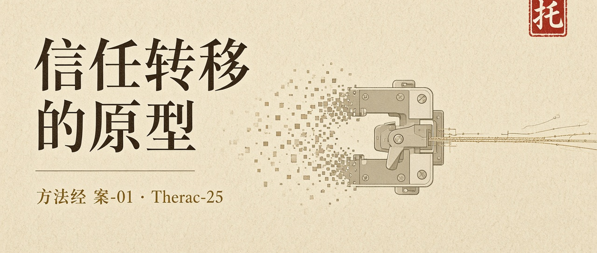
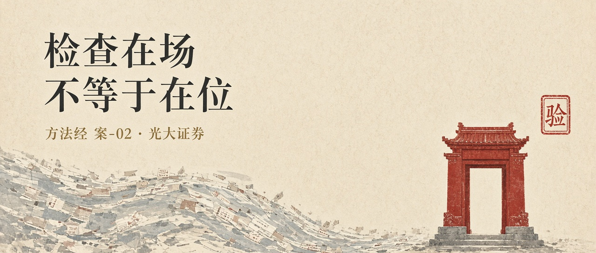
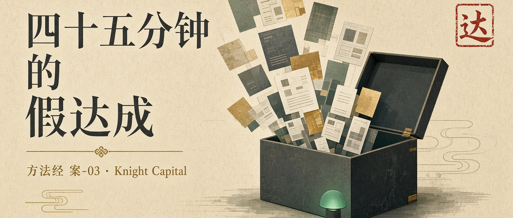
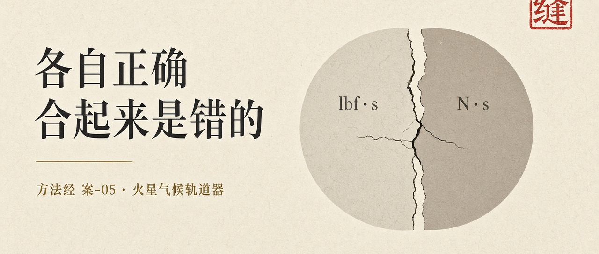
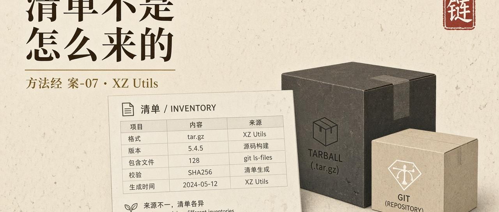
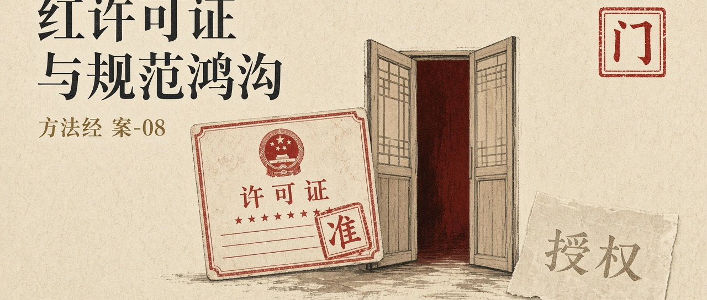
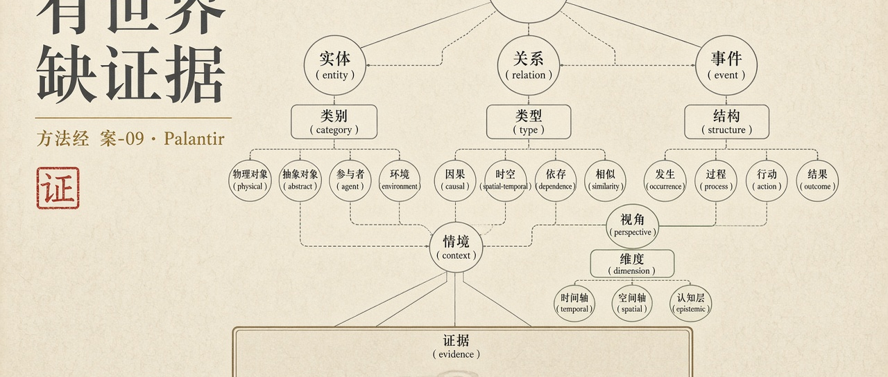

KOS-TL · CASE-00 · 2026PLATE / 方法经 · 案 · 非故事合集
METHOD CANON · 证伪器官
案例不是配图
十二案各自成篇。负向九例指出失败的关节，正向三例指出高峰停在哪一截。
Cases falsify a joint in the method. They are not illustrations, and they are not a season of stories.
案例若只用来吓人，会退回檄文。案例若只用来表彰工具，会退回展示。任何一例单独拿来当「使命已经做成」，都是假使命的一种精致形态。学尚未形成。
负向九例 · 绳子断在哪里

托 01 负向 · 证伪 Therac-25 信任从硬件互锁转到程序，再转到无人能盘问 不能误读成：一次普通 Bug
验 02 负向 · 证伪 光大证券 检查在场，不在成交路径上 不能误读成：手滑、个别人失误
达 03 负向 · 证伪 Knight Capital 高度可用可以同时是假达成 不能误读成：运维没盯盘 期
04
负向 · 证伪
爱国者宰赫兰
忠实执行了不再成立的假设
不能误读成：程序发疯
期
04
负向 · 证伪
爱国者宰赫兰
忠实执行了不再成立的假设
不能误读成：程序发疯

缝 05 负向 · 证伪 火星气候轨道器 各自正确，合起来是错的 不能误读成：某国单位制落后 护
06
负向 · 证伪
CrowdStrike
保护软件成为可信计算基单点
不能误读成：一次性供应商丑闻
护
06
负向 · 证伪
CrowdStrike
保护软件成为可信计算基单点
不能误读成：一次性供应商丑闻

链 07 负向 · 证伪 XZ Utils 清单回答有什么，后门出在怎么来的 不能误读成：开源本身有罪
门 08 负向 · 证伪 红许可证 实现满足规范可以完美执行假使命 不能误读成：形式化无用
证 09 负向 · 证伪 Palantir 有世界、有行动，缺验证与证据 不能误读成：缺权限、缺行动正向三例 · 高峰停在哪一截
 编
编
作者 陈鹏 · 二〇二六年十月 公众号导入：Word / Markdown · 檄文 · 专著 · 体系图